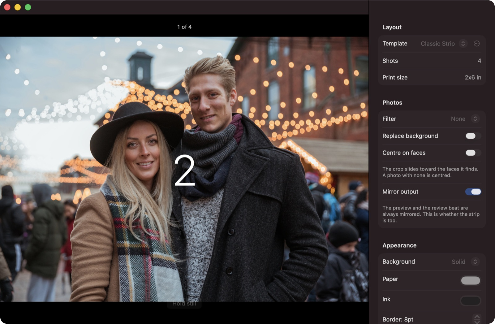
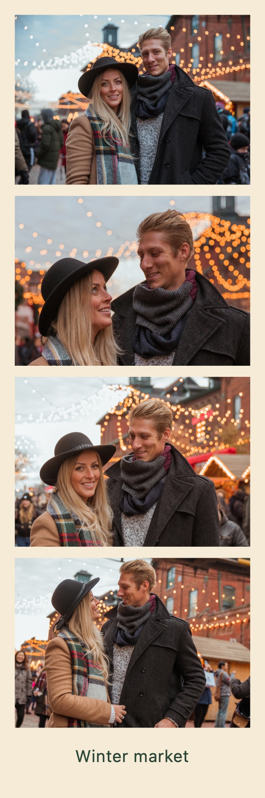
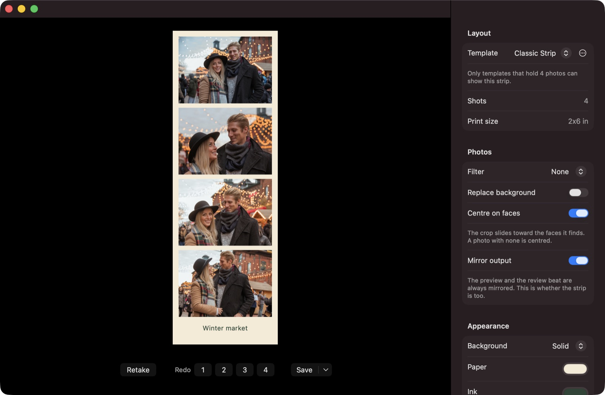
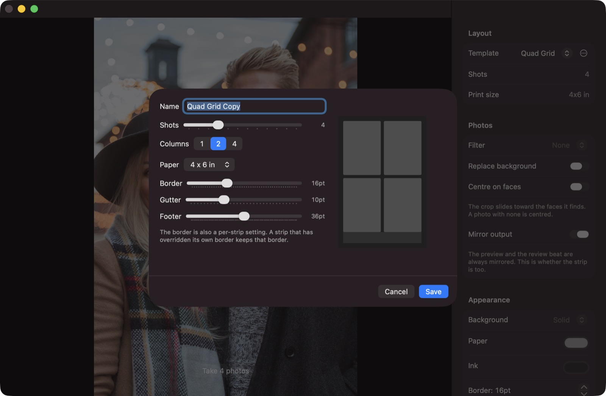

A photo booth for your Mac.
Take a sequence of photos with your camera and get a classic photo strip.
Free · macOS 14+ · Apple silicon & Intel


Features
-
Capture
Live mirrored preview, countdown, flash, and sounds. Each photo is centred on the faces in it, and you can retake a single shot.
-
Templates
Vertical strips and grid layouts. Build your own in the template editor and share it as a file.
-
Styling & backgrounds
Paper, ink, borders, filters, and captions. Kapture can find the person in each photo and put a colour or picture behind them.
-
Lossless editing
Strips are saved as recipes, not flattened images, so you can re-edit any of them at any time.
-
Export
300 dpi PNG, animated GIF, MP4, and PDF. Or print two strips on a 4×6 sheet.
-
Party mode
A fullscreen kiosk with keyboard-only controls. Guests scan a QR code to get their strip on their phone.
Screenshots


First launch
Kapture is free and not notarized by Apple, so macOS blocks it the first time.
- Open Kapture and click Done on the warning.
- Open System Settings → Privacy & Security, scroll down, and click Open Anyway next to Kapture.
- Open Kapture again and confirm.
This is only needed once per version.